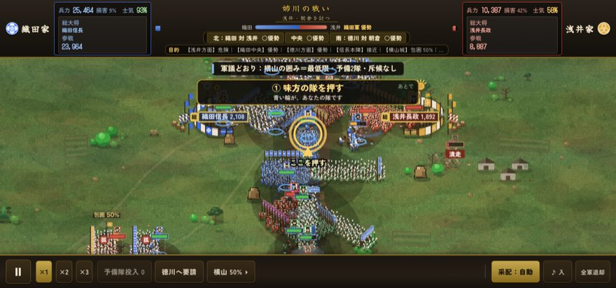
元亀元年
姉川の戦い
織田・徳川 対 浅井・朝倉
川を挟んだ大軍同士の野戦。浅瀬を渡るか。別戦線を支えるか。
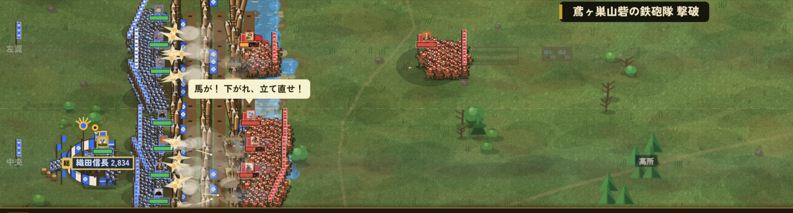
城を奪い、兵を率い、盟を結び、天下を争え。山崎、姉川、長篠、関ヶ原――歴史の転換点を、あなた自身の采配で。
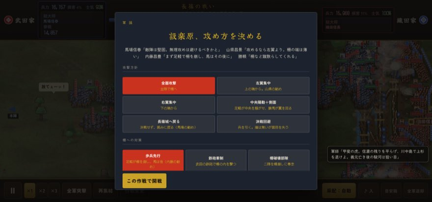
合戦の画面実際の合戦画面をそのまま。一兵ずつではなく、隊で、翼で、軍で動く。
この戦国ゲームは、“眺める”だけではない。
一兵ずつは操らない。武将の隊・翼・軍で、数万を動かす。
川、高地、柵、砦、霧。六十九の決戦、長篠と関ヶ原は別の戦。
軍議の一手が、その後の戦況を変える。正解は一つではない。
一城から、天下へ。
最初は、小さな一国。城を奪い。国を治め。兵を増やし。盟を結ぶ。やがて日本全土を、その旗の下へ。
ただの将ではない。あなたは“大名”だ。
戦う。治める。交渉する。裏切る。待つ。攻める。すべてを決めるのは、あなた。
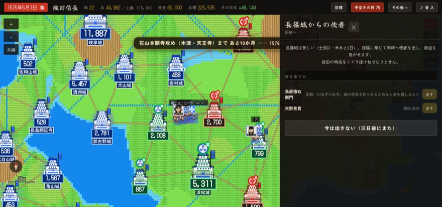
下へ進むほど、領地が広がる。
城・農地・資金・兵。民の忠が、兵の数になる。
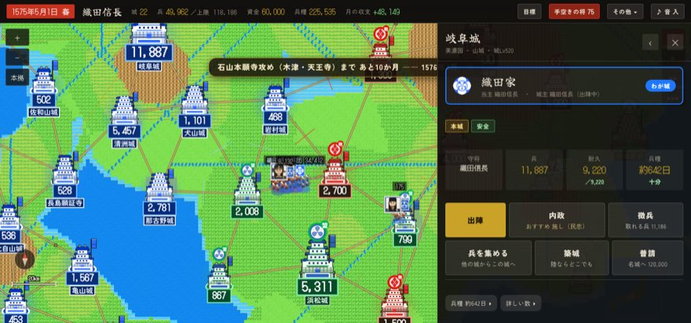
同盟・交渉・援軍。戦わずして有利を作る。
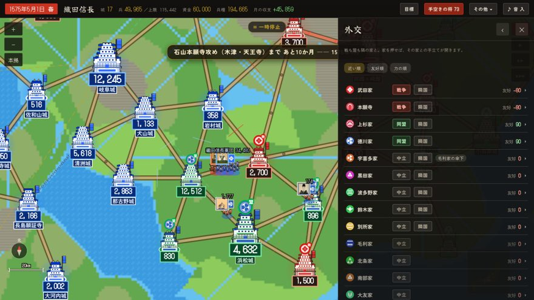
兵・武将・進軍・合戦。最適の戦場へ送り込む。
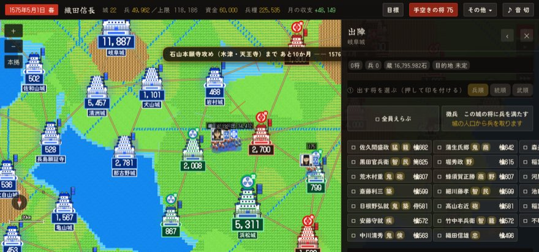
一兵ずつは操らない。武将の隊で、翼で、軍で動かす。左翼を進める。中央を支える。予備隊を投じる。
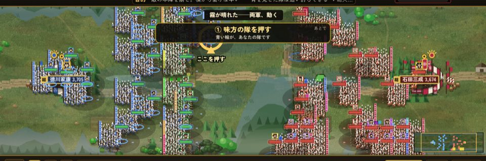
関ヶ原の本戦絵は実際の合戦画面。押す場所と、見る場所。
iPhone / iPad / ブラウザ ／ 長篠の戦いは無料 ／ 関ヶ原は ¥500
馬防柵と鉄砲、武田騎馬軍団。守るか。打って出るか。

川を挟んだ大軍同士の野戦。浅瀬を渡るか。別戦線を支えるか。
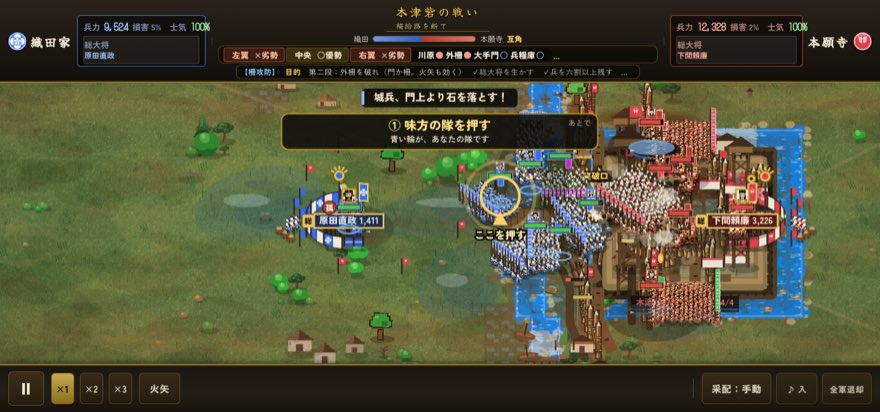
川、橋、柵、砦。正面突破か。迂回か。
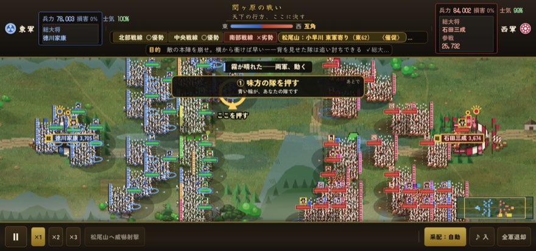
複数軍団が動く大戦。どこを支え、どこを捨てるか。
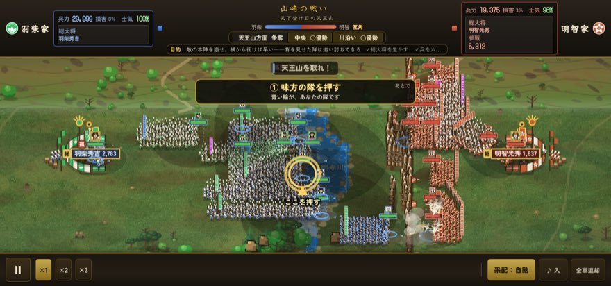
天王山を巡る高地争奪。高所を取るか。中央を押し切るか。
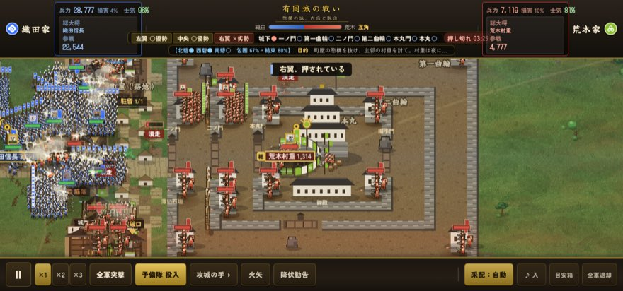
城を四方から囲む。門を破るか。兵糧を断つか。
武力だけでは、天下は取れない。軍議の一手が、その後の戦況を変える。
急報。
天王寺砦、あと三日。
援軍を待つか。少数で救援に向かうか。砦を捨てるか。
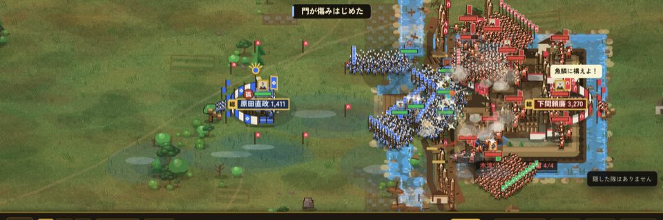
軍議――砦の備え、援軍の数、敵の補給。地図を前に、手を決める。
誰を前線へ出すか。誰を本陣に残すか。誰に別働隊を任せるか。配置もまた、采配。
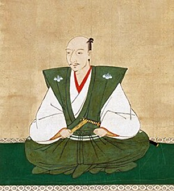
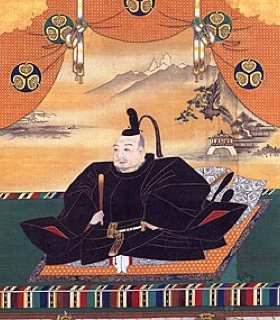
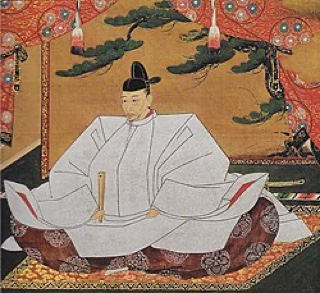
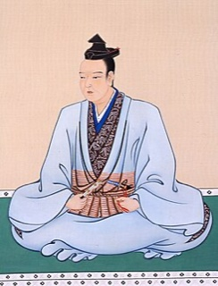
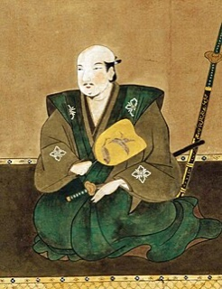
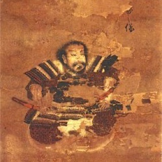
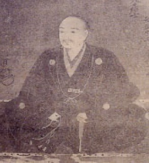
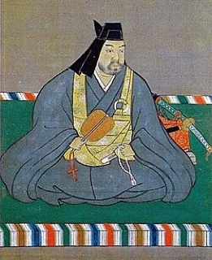
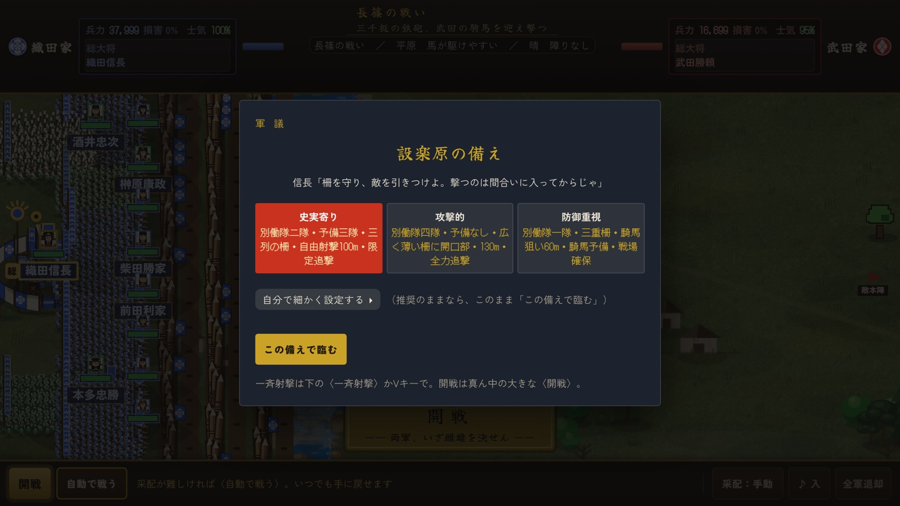
設楽原の備え――史実の布陣で行くか、自ら並べるか。
一城から始まった旗が、全国へ。史実は、ただの一つの結果にすぎない。長篠で武田が勝つ。山崎で明智が生き残る。関ヶ原で西軍が押し返す。可能性を決めるのは、あなたの采配。
押すだけ。複数はなぞる。
行き先を押す。柵へ、川へ、本陣へ。
一兵ずつは操らない。簡単操作。判断は奥深い。
織田・徳川連合軍 VS 武田軍
馬防柵。鉄砲。騎馬。史実と同じ戦い方を選ぶか。それとも、あなた自身の策で戦うか。
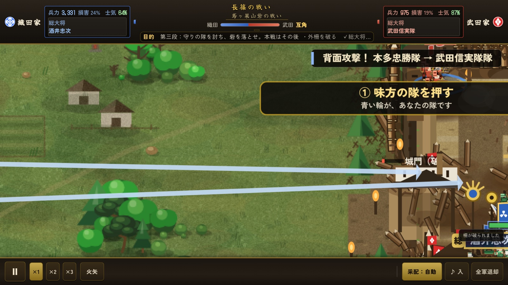
夜明け前の鳶ヶ巣山砦――別働隊で武田の後ろを突く。
敵 一万八千、味方 一万二千。北には浅瀬、中央には橋。あなたなら、どう攻める？
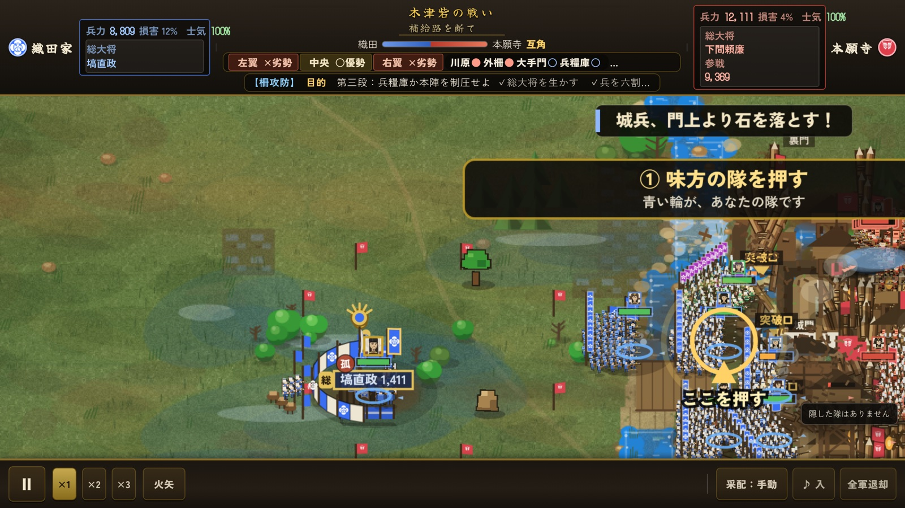
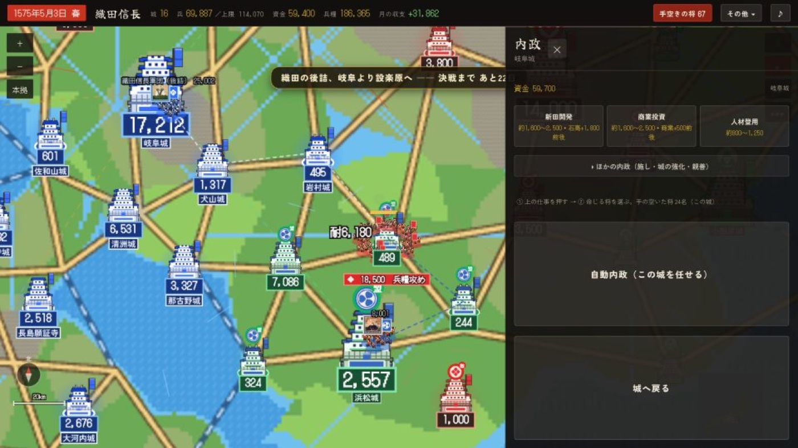
無料で遊べる「長篠の戦い」の遊び方、序盤の進め方、内政・外交・軍事、合戦で勝つコツを画像つきで。初めての一戦の前に、ざっと目を通しておくと勝ちやすい。
合戦画面の大改修（武将の絵・兵士・馬防柵・本陣・硝煙・新曲）のための軍資金を募っています。支援は開発の応援で、特典はありません。額は気持ちで。
ブラウザ版は PayPal（カード・銀行口座）、iPhone 版はアプリの表紙「軍資金募集」から App 内課金で。
遊んで困ったこと、欲しい手、直して欲しい所。何でも作り手へ。手紙の窓が開きます。
宛先 kaitoseto1129@gmail.com ── 手紙の窓が開かなければ、そのまま直接どうぞ。
歴史を眺めるな。次は、あなたが動かせ。
iPhone / iPad / ブラウザ ／ 長篠の戦いは無料 ／ 関ヶ原は ¥500